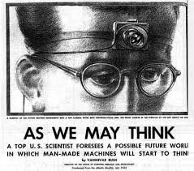
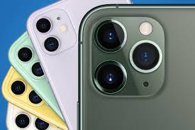

This was an extremely interesting article to read having been somewhat in contact with several versions of technology as imagined by Bush. It truly served as a precursor and predictor for the technologies we have today. He describes one of the technologies as, “The camera hound of the future wears on his forehead a lump a little larger than a walnut. It takes pictures 3 millimeters square, later to be projected or enlarged, which after all involves only a factor of 10 beyond present practice.”

It immediately made me think of the latest iPhone in which we or “the camera hound of the future” constantly carry a camera with us that has incredible photographical capabilities allowing for pictures to be enlarged or projected. Bush’s argument in essence speaks to, how the work of science should be put towards moving past helping society in physical capabilities and try to capture the mental capabilities. This immediately made me think of virtual reality and how it is nearing real experiences through capturing one’s mental processing of an action.

Reading this piece from Tim Berner’s Lee was very eye opening on the power of the web. It felt like a good reminder of the principles on which it was created, and the responsibilities we all have in utilizing it. Something I had not really considered prior to reading this article and taking this class is the concept of “keep[ing] the web separate from the internet”. It really made better understand that the web can and should be improved and innovated upon.